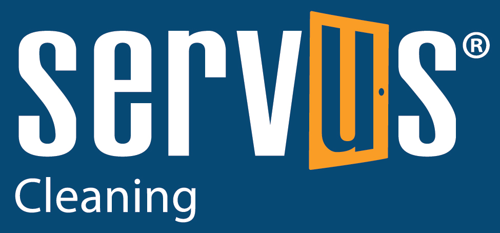

Servus Standard Operating Procedures — Day 1
Executive Overview: The Servus Standard
Welcome to the Servus Group Lower Mainland team. Here, we operate on a core formula: EX (Employee Experience) + CX (Customer Experience) = Growth. By investing in your knowledge and safety (EX), we ensure you deliver unparalleled, professional results to our clients (CX).
Accurate fiber identification is the absolute foundation of professional carpet cleaning and the cornerstone of the Servus standard. As Servus technicians held to the rigorous IICRC S100 standards, applying genuine textile science is required to uphold our "At Your Service" commitment. Flooring must be approached not merely as a surface to be cleaned, but as a complex chemical structure that interacts dynamically with its environment and the cleaning agents we apply.
The core T.A.C.T.Temperature, Agitation, Chemistry, Time — the four controllable variables in any cleaning process. principles—Temperature, Agitation, Chemistry, and Time—cannot be safely applied without first confirming the exact material composition of the carpet. Each fiber dictates how these four variables must be balanced. Guessing in this industry leads to catastrophic, expensive failures. Treating a delicate natural textile with the high heat and high-alkaline chemistry meant for a commercial synthetic will result in irreversible damage. Conversely, using gentle, neutral chemistry on a heavily soiled synthetic will leave the customer unsatisfied. The transition from a visual assessment to scientific identification is critical to eliminating guesswork, ensuring WorkSafeBC and IICRC compliance, and protecting both the client's investment and your professional reputation as a Servus Group expert.
Day 1: Fiber Characteristics and Identification
This module masters the physical and chemical properties of all major carpet textiles to prevent costly, irreversible damage. Understanding these properties allows Servus technicians to predict exactly how a carpet will react to moisture, heat, and alkalinity before a single drop of solution is applied.
Module 1: Introduction to Fibers and Yarns
A "fiber" is defined as any material made into filaments and yarn, while "yarn" is a bundle of twisted filaments. The way these yarns are constructed—either as short, spun "stapleShort fibers twisted together into yarn. Gives a softer, more natural look but may shed initially." yarns or long, extruded "Bulked Continuous FilamentBCF — a single continuous strand of synthetic fiber extruded in long lengths. Resists shedding and fuzzing." (BCF) yarns—affects how they shed and hold up to traffic.
Fibers are fundamentally categorized as natural (derived from living organisms, such as plants or animals) or synthetic (thermoplasticA material that softens and melts when heated. All major synthetic carpet fibers (nylon, polyester, olefin) are thermoplastic. by-products, primarily extruded from petroleum). Natural fibers contain microscopic irregularities that give them unique aesthetics but make them highly sensitive, while synthetic fibers are engineered for uniformity, durability, and cost-effectiveness.

Module 2: Natural Protein Fibers (Wool)
WoolNatural protein fiber from animal hair. Extremely sensitive to heat (>160°F) and high pH (>9.5). Requires wool-safe, low-temp cleaning., sourced from sheep fleece, requires a completely conservative, gentle cleaning approach. It excels at hiding soil because its opaque structure refracts light differently than synthetics, meaning a wool carpet can hold pounds of dirt before looking visibly soiled. While it boasts incredible natural resilience and inherent fire resistance (it is self-extinguishing), its microscopic protein structure is highly vulnerable to harsh chemistry.
Under a microscope, a wool fiber looks like a pinecone, covered in overlapping cuticular scalesMicroscopic overlapping scales on wool fibers. Can interlock under heat/agitation, causing irreversible felting.. Using a high alkaline pre-spray (pH above 9.5) or extraction temperatures exceeding 160°F will physically cook and dissolve these protein scales. This chemical burn causes the scales to lock together, resulting in irreversible damage known as feltingIrreversible matting of wool fibers caused by excessive heat, agitation, or high pH. The cuticular scales interlock permanently. or shrinkage. When cleaning wool, Servus technicians must use approved wool-safe chemistry (like Benefect Impact), maintain acidic to neutral pH levels, and avoid aggressive mechanical agitation.
Module 3: Natural Protein Fibers (Silk)
As a premium natural fiber often found in high-end oriental rugs or luxury blends, silkNatural protein fiber. Loses nearly all tensile strength when wet and stretches irreversibly. Max 170°F, neutral pH only. requires the most gentle, specialized cleaning protocols. It is a continuous filament fiber produced by silkworms that stretches up to 20% of its length but only retracts 2%, meaning aggressive physical agitation can permanently distort the rug's shape. Furthermore, silk loses up to 20% of its tensile strength when wet. Cleaning must occur at temperatures strictly below 170°F, and the fiber is easily degraded or completely dissolved by high alkalinity and chlorine bleach.
Module 4: Natural Cellulosic Fibers (Cotton, Jute, Sisal)
These plant-derived fibers are often used in the warp yarns of woven carpets or as highly absorbent backings (e.g., Jute). They are highly susceptible to shrinkage, cellulosic browningBrown discoloration in plant-based fibers caused by over-wetting. Lignin compounds wick to the surface as moisture evaporates., and mildew. Cotton is highly absorbent and requires careful pH management similar to wool.
Cellulosic browning is a critical issue technicians must anticipate. When jute backings or cotton fibers are over-wet or exposed to highly alkaline solutions, they release a natural polymer called ligninNatural compound in plant fibers. Turns brown when exposed to moisture and wicks to the surface, causing cellulosic browning.. As the carpet dries, moisture wicksStain or moisture drawn up from backing to fiber tips through capillary action during drying. Common cause of spot reappearance. to the surface, bringing this dark, tea-colored lignin with it, resulting in a brown stain across the carpet. This necessitates strict moisture control, rapid drying protocols, and often the application of an acid rinseLow-pH rinse applied after cleaning to neutralize alkaline residues, prevent resoiling, and restore fiber pH balance. to neutralize the alkalinity and reverse the browning.
Module 5: Synthetic Fibers: Nylon Generations 1-5
NylonMost popular carpet fiber (~65% market). Thermoplastic polyamide with excellent resilience. Clean with HWE at 180–200°F. is the undisputed premium champion of durability due to its exceptional resilience and elasticity, bouncing back beautifully after heavy compression. While it accepts dyes vibrantly through engineered "dye sitesMolecular locations on nylon fibers where dye bonds. If unprotected, these sites can bond with stain molecules, causing permanent discoloration.," Nylon is hydrophilic, naturally absorbing up to 4.5% of its weight in moisture. This means it takes longer to dry than other synthetics and necessitates careful pH management and thorough extraction passes.
Its melting point is around 420°F, making it highly receptive to Hot Water ExtractionHWE — the gold-standard deep cleaning method. Injects heated solution under pressure and immediately extracts with powerful vacuum. (HWE) at 180°F-200°F. 5th Generation NylonLatest nylon generation with factory-applied fluorochemical coating and acid dye resistor. High pH can strip these protections and void warranty. is specifically engineered with both a fluorochemical coatingFactory-applied protective treatment on 5th Gen Nylon that repels dry soil. Stripped by excessively high pH cleaning. (to resist dry soil) and an acid dye resistorChemical treatment on 5th Gen Nylon that blocks acid-based stains (red wine, sports drinks) from bonding to dye sites. (to prevent stains from items like red wine or sports drinks). Using an excessively high pH or harsh solvents on 5th Gen Nylon can strip these protective coatings, voiding the manufacturer's warranty.
Module 6: Synthetic Fibers: Polyester and Triexta
PolyesterSynthetic fiber (PET). Extremely stain-resistant to water-based stains but lipophilic — attracts and holds oily soils. combines moderate stain resistance with a soft, luxurious feel, often manufactured from recycled PET plastic bottles. It resists water-based stains brilliantly but is deeply lipophilicOil-loving — describes fibers that chemically attract and bond with oily/greasy soils. Requires alkaline degreasers and extended dwell times.—meaning it acts like a magnet for oily, lipid-based soils. Body oils from bare feet, pet oils, and airborne cooking greases chemically bond to polyester fibers. Over time, this causes "traffic lane graying" or yellowing that cannot be removed with standard water-based cleaners.
TriextaNewer polyester variant partly derived from corn polymer. Improved durability over standard PET. Same lipophilic cleaning challenges as polyester. (PTT) is a newer polyester variation partly made from corn polymer, offering improved durability and resiliency while maintaining excellent water-stain resistance. To clean these fibers, Servus technicians must lean heavily on the "Chemistry" and "Time" aspects of T.A.C.T., utilizing aggressive alkaline degreasers and extended dwell timesThe time a chemical solution remains on the carpet before extraction. Longer dwell time increases effectiveness — the "T" in T.A.C.T. to break the lipid-fiber bond.
Module 7: Synthetic Fibers: Olefin and Acrylic
OlefinPolypropylene fiber. Solution-dyed (color locked in), making it bleach-resistant. Softens below 300°F — wand burns are a major risk. (polypropylene) is the inexpensive workhorse of the commercial sector. It is completely hydrophobic, absorbing only 0.1% of its weight in water, which makes it naturally stain-resistant, highly resistant to chemical bleaching, and buoyant (it floats). Because it doesn't absorb water, any moisture applied sits on the surface or drains into the backing, making it notorious for wickingStain or moisture drawn up from backing to fiber tips through capillary action during drying. Common cause of spot reappearance. soils back to the surface as it dries.
This inherent resistance demands aggressive alkaline chemistry (pH 10-12, such as Esteam Citrus Slam) for adequate soil removal. Critically, Olefin has severe physical weaknesses: it crushes easily and is extremely heat sensitive, softening below 300°F (melting point ~320°F–330°F). A technician moving a hot extraction wand too quickly back and forth can generate enough friction heat to physically melt the fibers, leaving permanent "wand drag" marks. Furthermore, Olefin is highly susceptible to permanent alkaline browning if cleaned with a high pH without a proper acidic neutralizing rinse (acid rinseLow-pH rinse applied after cleaning to neutralize alkaline residues, prevent resoiling, and restore fiber pH balance.).
Module 8: Visual Fiber Identification
Visual identification is the least accurate diagnostic method because modern synthetic fibers are specifically engineered to mimic the look and feel of natural ones. However, recognizing specific textures and wear patterns can help formulate an initial hypothesis before chemical testing. For example, noticing an Astroturf-like, rigid feel suggests OlefinPolypropylene fiber. Solution-dyed (color locked in), making it bleach-resistant. Softens below 300°F — wand burns are a major risk.; observing severe matting and crushing in traffic lanes also points to Olefin or Polyester. Conversely, a dull, matte appearance with high resilience often suggests Wool, while severe abrasion (where the fiber looks physically scratched or frayed) is characteristic of worn Nylon.
Module 9: Burn Testing Methodologies
Because visual inspection is unreliable, burn testingPrimary field method for fiber identification. A tuft is ignited and four characteristics observed: flame, smoke, odor, and ash/residue. is the industry standard for field identification. This test requires isolating a tuftA small bundle of carpet fibers pulled from an inconspicuous area for burn testing. Always use tweezers; never cut pile loops. of fiber from an inconspicuous area (like a closet corner) with tweezers. The technician must ignite the tuft over a fire-safe surface using an odorless butane lighterThe only acceptable ignition source for burn testing. Must be odorless butane — never sulfur matches, as sulfur masks the diagnostic fiber odor.. Sulfur matches must never be used, as the sulfur smell will completely mask the natural odor of the burning fiber, which is a critical identifying factor. To confirm the fiber type, the technician must carefully observe four distinct elements: the flame color and behavior, the color of the smoke, the odor produced, and the texture and color of the resulting ash.
Module 10: Evaluating Burn Tests & Chemical Tests
Specific burn reactions reliably confirm fiber identities:
- NylonMost popular carpet fiber (~65% market). Melting point ~420°F. Clean with HWE at 180–200°F.: Melts and shrinks from the flame, produces a blue base flame with an orange tip, smells distinctly of celery or sealing wax, and leaves a hard, perfectly round gray/brown bead.
- OlefinPolypropylene fiber. Solution-dyed, bleach-resistant. Softens below 300°F — wand burns are a major risk.: Melts and burns rapidly, smells like asphalt or burning candles, and leaves a hard, round, light-colored bead.
- PolyesterSynthetic fiber (PET). Stain-resistant to water-based stains but lipophilic — attracts and holds oily soils.: Burns with a heavy black smoke, smells sweet or like overripe fruit, and leaves a shiny black, hard bead.
- WoolNatural protein fiber. Extremely sensitive to heat (>160°F) and high pH (>9.5). Requires wool-safe, low-temp cleaning.: Burns slowly with an orange flame, sizzles, smells strongly of burning hair or feathers, and leaves a black, crumbly ashWhat remains after burn testing. Synthetics form hard, round beads. Wool produces black, crumbly ash that turns to powder. that easily turns to powder when crushed.
Alternatively, chemical field tests can be applied. Formic acidChemical field test — rapidly dissolves nylon at room temperature. Olefin and polyester remain completely unaffected. Definitive nylon confirmation. will quickly dissolve nylon fibers at room temperature, instantly distinguishing it from Olefin or Polyester, which will remain completely unaffected by the acid.
Quick Reference: Fiber Properties and Cleaning Vulnerabilities
| Fiber Type | Max Temp | Max pH | Primary Weakness | Cleaning Focus |
|---|---|---|---|---|
| Wool | 160°F | Neutral to Mild Acid (pH < 9.5) | Heat causing shrinkage, high pH causes feltingIrreversible matting of wool fibers caused by excessive heat, agitation, or high pH. | Low temp, wool-safe chemistry |
| Silk | 170°F | Neutral | Stretch when wet, complete loss of tensile strength | Low moisture, zero agitation |
| Cotton / Jute | Variable | Neutral | Cellulosic BrowningBrown discoloration in plant-based fibers caused by over-wetting. Lignin wicks to the surface as moisture evaporates., Molds | Fast drying, moisture control, acidic rinse |
| Nylon (Gen 5) | 200°F | < pH 10 | High pH strips warranty protection | Heat and extraction |
| Polyester | 180°F | High Alkaline ok | Attracts oils (lipophilicOil-loving — fibers that chemically attract and bond with oily/greasy soils. Requires alkaline degreasers.) | High pH chemistry + extended dwell time |
| Olefin | 300°F (Melts) | pH 10 - 12 (High) | Friction heat (wand burns), crushes easily | Smooth wand passes, strong alkaline followed by acid rinseLow-pH rinse applied after cleaning to neutralize alkaline residues and prevent resoiling. |
Module 11: Interactive Burn Test Decision Walkthrough
Walk through the fiber identification process step by step. At each stage, observe the burn test result and answer the question — the walkthrough will guide you to the correct fiber identification. This is how you'll think on the job.
Pre-Inspection Form — Field Documentation
Professional pre-inspection is the first step of every carpet cleaning job. Before any equipment is unloaded, you walk the space with the client, document conditions, identify fiber types, flag stains, and set realistic expectations. This protects both you and the client.
Pre-inspection documentation prevents disputes, protects against liability claims for pre-existing damage, and ensures you select the correct cleaning method and chemistry for each fiber type. It is required by IICRC S100 standards.
Interactive Pre-Inspection Form
Practice filling out a pre-inspection form below. In the field, you will complete this form with the client present before starting any work.

CARPET CLEANING PRE-INSPECTION FORM
The call: Mrs. Johnson has a 3-bedroom home with an 8-year-old wool Berber carpet. She has two cats and reports pet odor in the master bedroom. She mentions a large coffee stain in the living room and says she used a store-bought carpet cleaner on it last month. The hallway has visible traffic wear.
Your task: Using the form above, practice completing a pre-inspection for this scenario. Consider:
- Fiber: Wool — what pH range is safe? (4–8 only)
- Style: Berber (level loop) — what are the risks with aggressive extraction?
- Stains: Coffee = tannin stainPlant-based stain (coffee, tea, wine). Treat with oxidizers. Never use high pH on wool.. Previous DIY cleaning may have set the stain.
- Odor: Pet odor in bedroom — enzyme treatment needed, but check wool compatibility first.
- Pre-existing: Traffic wear in hallway is permanent fiber damage — document this as a limitation so the client understands it cannot be reversed by cleaning.
- Method: HWE with wool-safe chemistry (low pH, low temperature, gentle extraction).
This is exactly how you should approach every job. Inspect first, document everything, set expectations, then clean.